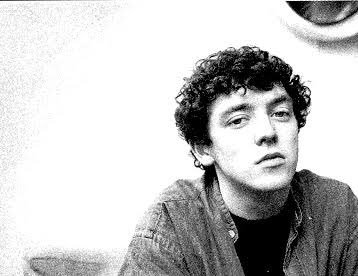

Oasis were formed in Manchester in 1991 which consisted of Liam Gallagher, Paul Arthurs (Bonehead), Paul McGuigan (Guigsy) and Tony McCarroll. Liam later asked his older brother Noel Gallagher to become the bands fifth member which solidified the band's core line-up. Over the years of the bands existence, the line-up had various changes with only the Gallagher brothers remaining as the staple members. The band went on to global success and had countless singles in the charts. They had also sold an estimated 75 million records worldwide and were also known as the most succesfull act in the UK between 1995 and 2005. Aswell as an incredible following by those who grew up in the 80s/90s, they now have even more through the milenials who grew up in the early 2000s and 2010s. With this being said, most people are aware of the iconic split of the band back in 2009 when the Gallagher brothers hit the peak of their rivalry and on going arguements. This led to Noel leaving and leading both brothers on a different path of solo success. Oasis will live forever within all fans hearts and people remain hopefull till this day of a reunion and for the broken brothers to talk and sort out their issues so they can start being brothers again.
The Band Members of Oasis
Liam Gallagher :
Lead and backing vocals, tambourine with some use of the acoustic guitar (1991-2009)
Noel Gallagher :
Lead and rhythm guitars, bass, main songwriter, backing vocals with occasional lead vocals (1991-2009)
Paul 'Bonehead' Arthurs :
Rhythm guitars, keyboards, bass (1991-1999)
Paul 'Guigsy' McGuigan :
Bass (1991-1999)

Tony McCarroll
Drums, percussion (1991-1995)
Alan White :
Drums, percussion (1995-2004)
Andy Bell :
bass, keyboards, rhythm and lead guitars (1999-2009)
Gem Archer :
Rhythm and lead guitars, harmonica and backing vocals (1999-2009)
Zak Starkey (Touring Member) :
Drums, percussion (2004-2008)
Chris Sharrock (Touring Member) :
Drums, percussion (2008-2009)
Top 5 Oasis Songs
This list includes the songs with the most streams on Spotify and fans opinions as a questionaire was produced in order for the fans to get involved in picking their favourite songs from this timeless band
Over the 18 years that Oasis were together, the band went on countless global tours and hosted many concerts. The most famous of these were at Knebworth 96' (based in Hertfordshire, UK) and Maine Road 96' (Manchester City Stadium from 1923-2003). Maine Road is a personal favourite for the Gallagher brothers as they are famous Mancherster City fans so it was one of the most nerve racking yet satisfying performances for them. Expecially considering it was infront of their home fans. Knebworth, however, is known for being the peak of 90's britpop as over 250,000 travelled to watch them perform live.
Clip - Main Road 1996:
To watch the full iconic performance, please click here
Why Did Oasis Split?
After many years of the band being worldwide stars, they began to show cracks within the group as more and more arguements would ensure between the Gallagher brothers. This added onto the already heated relationship between the brothers and the british press. The brother rivalry was reported on many times and became one of the reasons for why the band is so well-known as it is one of the biggest things that is talked about nearly 11 years after the split. Back on the night in 2009 when the band did dissolve, they were about to go on stage infront of their many fans in Paris. But backstage, the brothers got into a fight once again and after the last guitar was smashed. Noel walked out as it was the "straw that broke the camel's back". That lead to the two brothers going on two very different paths in their personal lives and their carrers. That infamous night has been told slightly differently by the two brothers over the last 11 years. On one hand, Liam claims that he still doesn't know the real reason for why Noel left the band and assumes it was because he was bored of the rock and roll lifestlye. Whereas, on the other hand, Noel claims it was because of Liams violent behaviour while under the influence of drugs and alcohol. He even said in an interview back in 2011 that just before they were about to go on stage, he got into the car and "sat there for five minutes and I just said f*ck it, I can't do it anymore...". Noel has not looked back ever since.